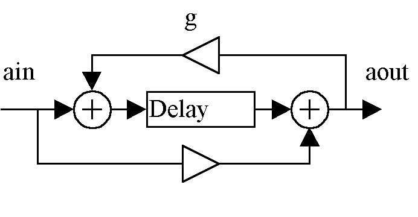
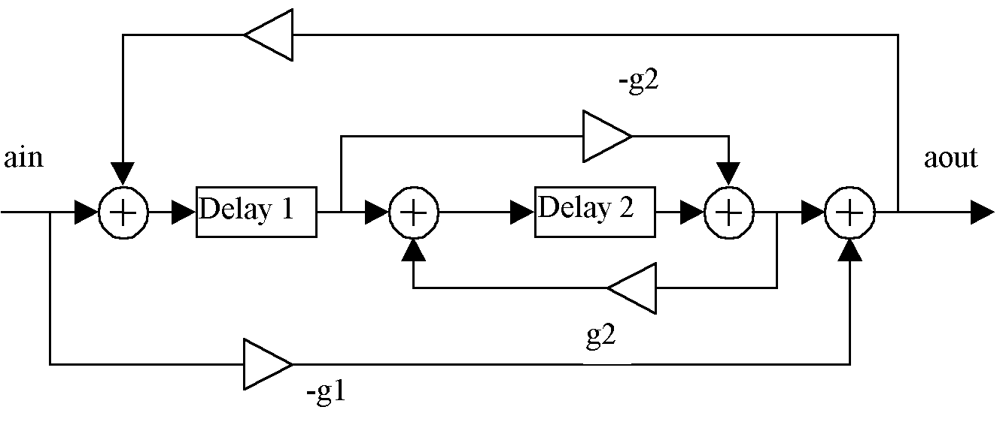
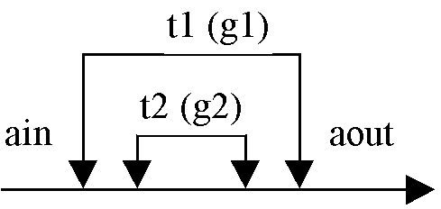
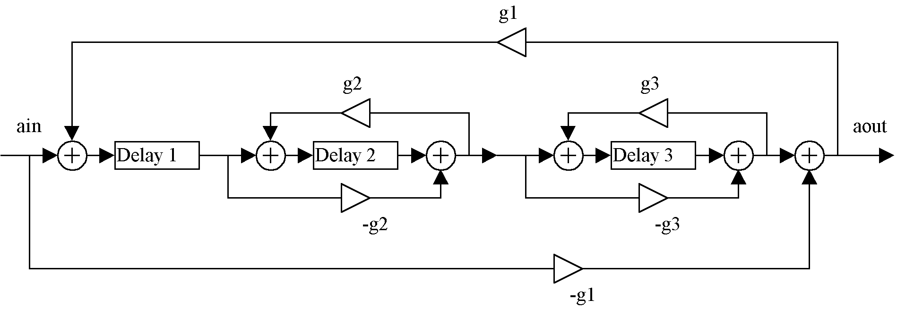
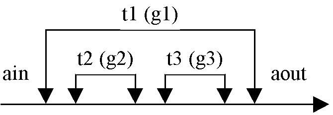
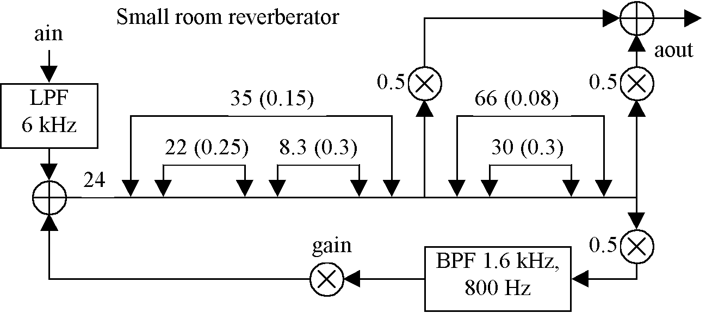
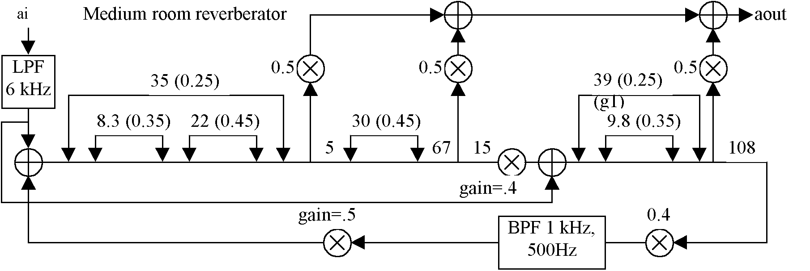
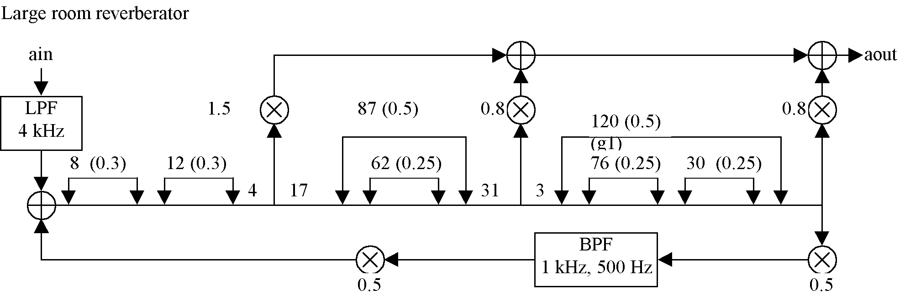

This chapter describes the implementation of reverbs based on nested allpass filters. Reverberant sound occurs when sound waves are reflected by surfaces repeatedly until the individual reflections merge into a continuous sound. Nested allpass filters proposed by Barry Vercoe and Miller Puckette (1985) can be used to simulate the dense reflections associated with room reverberation. This chapter describes several different types of allpass filters and uses them to implement three different reverbs. The reverbs presented in this section are derived from those developed by Bill Gardner (1992).
The Allpass Filter
Adding both a feedback path and a feedforward path to a delay line as shown in figure 24.1 makes an allpass filter.

Figure 24.1 Block diagram of a simple allpass filter.
Gain is applied to the feedback path and negative gain is applied to the feedforward path. An allpass filter passes all frequencies unaltered but changes the phase of each frequency. This can be implemented in Csound as follows:
| adel1 | init | 0 | |
| aout | = | adel1-igain*ain | ; FEEDFORWARD |
| adel1 | delay | ain+igain*aout, itime | ; FEEDBACK |
The Single Nested Allpass Filter
A single nested allpass filter is implemented by surrounding one allpass filter by a second as shown in figure 24.2.

Figure 24.2 Block diagram of a single nested allpass filter.
?A simplified representation of the allpass filter presented in figure 24.2 is shown in figure 24.3. The outer delay time t1 in figure 24.3 is equal to the sum of the delay1 and delay2 times of figure 24.2.

Figure 24.3 Block diagram of a simplified single nested allpass filter.
?This can be implemented in Csound as follows:
| asum | = | adel2-igain2*adel1 | ; Feedforward |
| aout | = | asum-igain1*ain | ; Feedforward |
| adel1 | delay | ain+igain1*aout, itime | ; Feedback |
| adel2 | delay | adel1+igain2*asum, itime2 | ; Feedback |
The Double Nested Allpass Filter
A double nested allpass filter is implemented by surrounding two allpass filters in series by a third allpass filter as shown in figure 24.4.

Figure 24.4 Block diagram of double nested allpass filter.
?The simplified version of this is presented in figure 24.5. In this case t1 in figure 24.5 is the sum of delay1, delay2 and delay3 of figure 24.4.

Figure 24.5 Simplified block diagram of a double nested allpass filter.
?The double nested allpass filter can be implemented in Csound as follows:
| asum1 | = | adel2-igain2*adel1 | ; 1st In FF |
| asum2 | = | adel3-igain3*asum1 | ; 2nd In FF |
| aout | = | asum2-igain1*ain | ; Outer FF |
| adel1 | delay | ain+igain1*aout, itime1 | ; Outer FB |
| adel2 | delay | adel1+igain2*asum1, itime2 | ; 1st In FB |
| adel3 | delay | asum1+igain3*asum2, itime3 | ; 2nd In FB |
Small Room Reverberator
The nested allpass filters are now combined to form reverbs. The first reverb presented is for a small room. It consists of a double nested allpass filter followed by a single nested allpass filter. The input is pre-filtered at 6 kHz to reduce metallic ringing. An overall feedback path is bandpass filtered and added to the input. The feedback filter also reduces the metallic character of the reverb and reduces DC offset. Another simplified notation is presented in figure 24.6. Delays are indicated by putting the delay time above the signal path and all times in these figures are expressed in milliseconds.

Figure 24.6 Block diagram of small room reverberator.
?The small room reverb shown in figure 24.6 can be implemented in Csound as follows:
| instr | 2402 | ; small room reverb | ||
| idur | = | p3 | ||
| iamp | = | p4 | ||
| iinch | = | p5 | ||
| aout41 | init | 0 | ||
| adel01 | init | 0 | ||
| adel11 | init | 0 | ||
| adel21 | init | 0 | ||
| adel22 | init | 0 | ||
| adel23 | init | 0 | ||
| adel41 | init | 0 | ||
| adel42 | init | 0 | ||
| kdclick | linseg | 0, .002, iamp, idur-.004, iamp, .002, 0 | ||
| ; Initialize | ||||
| asig0 | zar | iinch | ||
| aflt01 | butterlp | asig0, 6000 | ; Pre-Filter | |
| aflt02 | butterbp | .5*aout41, 1600, 800 | ; Feedback Filter | |
| asum01 | = | aflt01+.5*aflt02 | ; Initial Mix | |
| ; Delay 1 | ||||
| adel11 | delay | asum01, .024 | ||
| ; Double Nested Allpass | ||||
| asum21 | = | adel22-.25*adel21 | ; First Inner Feedforward | |
| asum22 | = | adel23-.30*asum21 | ; Second Inner Feedforward | |
| aout21 | = | asum22-.15*adel11 | ; Outer Feedforward | |
| adel21 | delay | adel11+.15*aout21, .0047 | ; Outer Feedback | |
| adel22 | delay | adel21+.25*asum21, .022 | ; First Inner Feedback | |
| adel23 | delay | asum21+.30*asum22, .0083 | ; Second Inner Feedback | |
| ; Single Nested Allpass | ||||
| asum41 | = | adel42-.3*adel41 | ; Inner Feedforward | |
| aout41 | = | asum41-.08*aout21 | ; Outer Feedforward | |
| adel41 | delay | aout21+.08*aout41, .036 | ; Outer Feedback | |
| adel42 | delay | adel41+.3*asum41, .030 | ; Inner Feedback | |
| ; Output | ||||
| aout | = | .6*aout41+.5*aout21 | ||
| outs | aout*kdclick, -aout*kdclick | |||
| endin | ||||
Figure 24.7 Orchestra code for instr 2402, a small room reverb.
Medium Room Reverberator
The next reverb is for a medium room. It consists of a double nested allpass filter followed by an allpass filter, followed by a single nested allpass filter. The input is prefiltered at 6 kHz and is introduced at both the beginning and before the final nested allpass filter. Output is taken after each allpass filter section. The overall feedback is bandpass filtered at 1 kHz with a bandwidth of 500 Hz. There are four delays in this reverb. The first delay follows the first output tap. The second and third delays are before and after the second output tap and the third delay precedes the overall feedback.

Figure 24.8 Block diagram of medium room reverberator.
| instr | 2403 | ; Medium Room Reverb | ||
| idur | = | p3 | ||
| iamp | = | p4 | ||
| iinch | = | p5 | ||
| adel71 | init | 0 | ||
| adel11 | init | 0 | ||
| adel12 | init | 0 | ||
| adel13 | init | 0 | ||
| adel31 | init | 0 | ||
| adel61 | init | 0 | ||
| adel62 | init | 0 | ||
| kdclick | linseg | 0, .002, iamp, idur-.004, iamp, .002, 0 | ||
| ; Initialize | ||||
| asig0 | zar | iinch | ||
| aflt01 | butterlp | asig0, 6000 | ; Pre-Filter | |
| aflt02 | butterbp | .4*adel71, 1000, 500 | ; Feedback Filter | |
| asum01 | = | aflt01+.5*aflt02 | ; Initial Mix | |
| ; Double Nested Allpass | ||||
| asum11 | = | adel12-.35*adel11 | ; First Inner Feedforward | |
| asum12 | = | adel13-.45*asum11 | ; Second Inner Feedforward | |
| aout11 | = | asum12-.25*asum01 | ; Outer Feedforward | |
| adel11 | delay | asum01+.25*aout11, .0047 | ; Outer Feedback | |
| adel12 | delay | adel11+.35*asum11, .0083 | ; First Inner Feedback | |
| adel13 | delay | asum11+.45*asum12, .022 | ; Second Inner Feedback | |
| adel21 | delay | aout11, .005 | ; Delay 1 | |
| ; Allpass 1 | ||||
| asub31 | = | adel31-.45*adel21 | ; Feedforward | |
| adel31 | delay | adel21+.45*asub31,.030 | ; Feedback | |
| adel41 | delay | asub31, .067 | ; Delay 2 | |
| adel51 | delay | .4*adel41, .015 | ; Delay 3 | |
| aout51 | = | aflt01+adel41 | ||
| ; Single Nested Allpass | ||||
| asum61 | = | adel62-.35*adel61 | ; Inner Feedforward | |
| aout61 | = | asum61-.25*aout51 | ; Outer Feedforward | |
| adel61 | delay | aout51+.25*aout61, .0292 | ; Outer Feedback | |
| adel62 | delay | adel61+.35*asum61, .0098 | ; Inner Feedback | |
| ; Combine Outputs | ||||
| aout | = | .5*aout11+.5*adel41+.5*aout61 | ||
| adel71 | delay | aout61, .108 | ; Delay 4 | |
| outs | aout*kdclick, -aout*kdclick | ; Final Output | ||
| endin | ||||
Figure 24.9 Orchestra code for instr 2403, a medium room reverberator.
Large Room Reverberator
The final reverb considered is for a large room. The major elements are two allpass filters in series, followed by a single nested allpass filter and finally a double nested allpass filter. Outputs are taken after the first two allpass filters, after the single nested allpass filter and after the double nested allpass filter. Delays are introduced before and after the first two output taps. The input is again prefiltered and the overall feedback is scaled and bandpass filtered.

Figure 24.10 Block diagram of large room reverberator.
| instr | 2404 | ; Large Room Reverb | ||
| idur | = | p3 | ||
| iamp | = | p4 | ||
| iinch | = | p5 | ||
| aout91 | init | 0 | ||
| adel01 | init | 0 | ||
| adel11 | init | 0 | ||
| adel51 | init | 0 | ||
| adel52 | init | 0 | ||
| adel91 | init | 0 | ||
| adel92 | init | 0 | ||
| adel93 | init | 0 | ||
| kdclick | linseg | 0, .002, iamp, idur-.004, iamp, .002, 0 | ||
| ; Initialize | ||||
| asig0 | zar | iinch | ||
| aflt01 | butterlp | asig0, 4000 | ; Pre-Filter | |
| aflt02 | butterbp | .5*aout91, 1000, 500 | ; Feedback Filter | |
| asum01 | = | aflt01+.5*aflt02 | ; Initial Mix | |
| ; Allpass 1 | ||||
| asub01 | = | adel01-.3*asum01 | ; Feedforward | |
| adel01 | delay | asum01+.3*asub01,.008 | ; Feedback | |
| ; Allpass 2 | ||||
| asub11 | = | adel11-.3*asub01 | ; Feedforward | |
| adel11 | delay | asub01+.3*asub11,.012 | ; Feedback | |
| adel21 | delay | asub11, .004 | ; Delay 1 | |
| adel41 | delay | adel21, .017 | ; Delay 2 | |
| ; Single Nested Allpass | ||||
| asum51 | = | adel52-.25*adel51 | ; Inner Feedforward | |
| aout51 | = | asum51-.5*adel41 | ; Outer Feedforward | |
| adel51 | delay | adel41+.5*aout51, .025 | ; Outer Feedback | |
| adel52 | delay | adel51+.25*asum51, .062 | ; Inner Feedback | |
| adel61 | delay | aout51, .031 | ; Delay 3 | |
| adel81 | delay | adel61, .003 | ; Delay 4 | |
| ; Double Nested Allpass | ||||
| asum91 | = | adel92-.25*adel91 | ; First Inner Feedforward | |
| asum92 | = | adel93-.25*asum91 | ; Second Inner Feedforward | |
| aout91 | = | asum92-.5*adel81 | ; Outer Feedforward | |
| adel91 | delay | adel81+.5*aout91, .120 | ; Outer Feedback | |
| adel92 | delay | adel91+.25*asum91, .076 | ; First Inner Feedback | |
| adel93 | delay | asum91+.25*asum92, .030 | ; Second Inner Feedback | |
| ; Combine outputs | ||||
| aout | = | .8*aout91+.8*adel61+1.5*adel21 | ||
| outs | aout*kdclick, -aout*kdclick | ; Final Output | ||
| endin | ||||
Figure 24.11 Orchestra code for instr 2404, a large room reverb
Conclusion
The nested allpass filters presented here suggest other configurations of allpass filters. For instance, a third allpass filter could be inserted into the double nested allpass filter for three allpass filters in series. An additional level of nesting could be applied to the nested allpass filters. Many other configurations of nesting could be the subject of future experimentation and many other reverb configurations could be implemented as a result. The final Csound orchestra and score accompanying this chapter, instr 2405.orc features a flexible system for experimenting with various reverb configurations.
References
Vercoe, B. and M. Puckette. 1985. Synthetic Spaces — Artificial Acoustic Ambiance from Active Boundary Computation. unpublished NSF proposal . Boston, MA. Music and Cognition Office at MIT Media Lab.
Gardner, W. G. 1992. The Virtual Acoustic Room. Master's thesis, MIT Media Lab.